Almost every yard has one, a corner that never quite got a purpose.
It's not big enough for a real garden bed, not central enough for furniture, so it just sits there empty, or quietly collects whatever doesn't fit anywhere else.
That corner is actually one of the easiest spots in the entire yard to transform, precisely because nobody expects much from it in the first place.
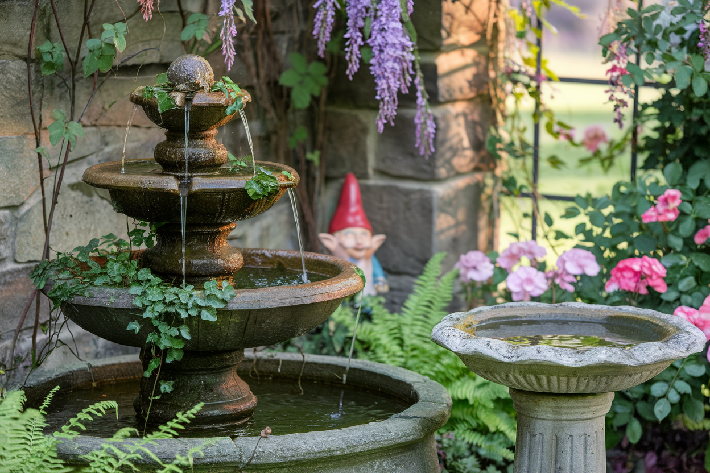
1. Let Your Own Style Lead the Way
A corner done according to someone else's exact blueprint rarely feels as good as one shaped around what you actually like.
A favorite color, a specific plant, a found object with some sentimental value, personal touches are what separate a generic corner fix from one that feels like it genuinely belongs to the rest of the home.
There's no single correct way to do this. The real goal is a corner that actually gets used, not one that matches some template exactly.
2. Don't Skip the Lighting
A corner that disappears after dark loses half its value, no matter how well it's planted or furnished during the day.
A few solar stake lights, a string of warm bulbs, or a single lantern extend the corner's use well past sunset.
This is one of the cheapest additions on this whole list, and also one of the easiest to skip. It's worth saving for last, once the planting and seating are already settled.
3. Combine Function and Style
The best corner transformations usually do more than one job at once, a seating spot that's also shaded by a trellis, or a planting bed that also happens to screen an unwanted view.
Thinking about what the corner could actually solve, not just how it could look, tends to produce a far more satisfying result than styling alone ever does.
This is the point where a corner stops feeling like leftover space and starts feeling like a genuinely planned part of the yard.
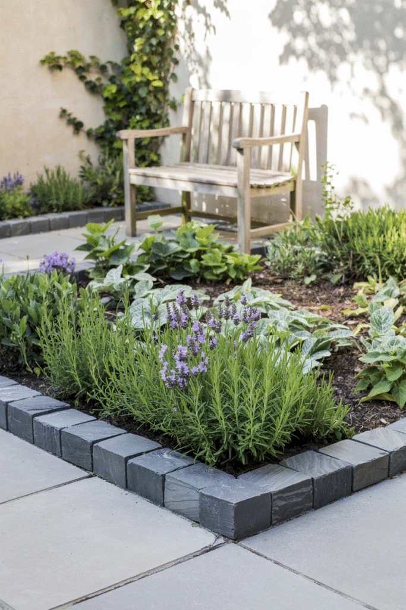
4. Give the Corner an Actual Job
A corner with a defined purpose, a small herb garden, a compost spot, a tool storage nook, reads as intentional even without much decor around it.
This works especially well for the corner that's awkward specifically because nothing else in the yard fits there. Giving it a job solves two problems at once.
A bit of edging or a low border helps visually separate the purposeful corner from the rest of the lawn around it.
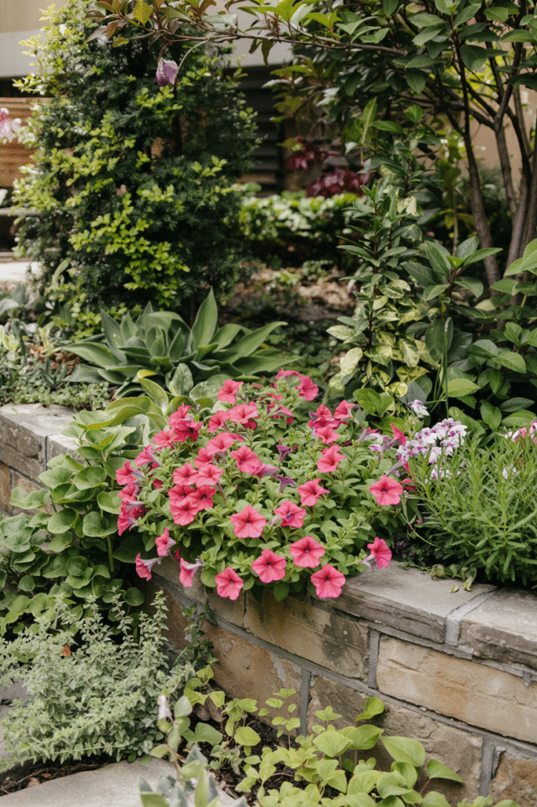
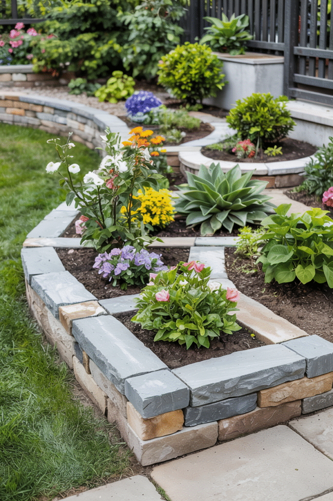
5. Use Flowers to Fix a Boring Corner
A corner with nothing going on visually is usually just missing color, not structure.
A cluster of flowering plants in varying heights, tall toward the back, shorter toward the front, fills the space without needing any hardscaping at all.
This is one of the lowest-cost, lowest-effort ways to transform a corner, and one of the most forgiving if the first plant choice doesn't quite work out.
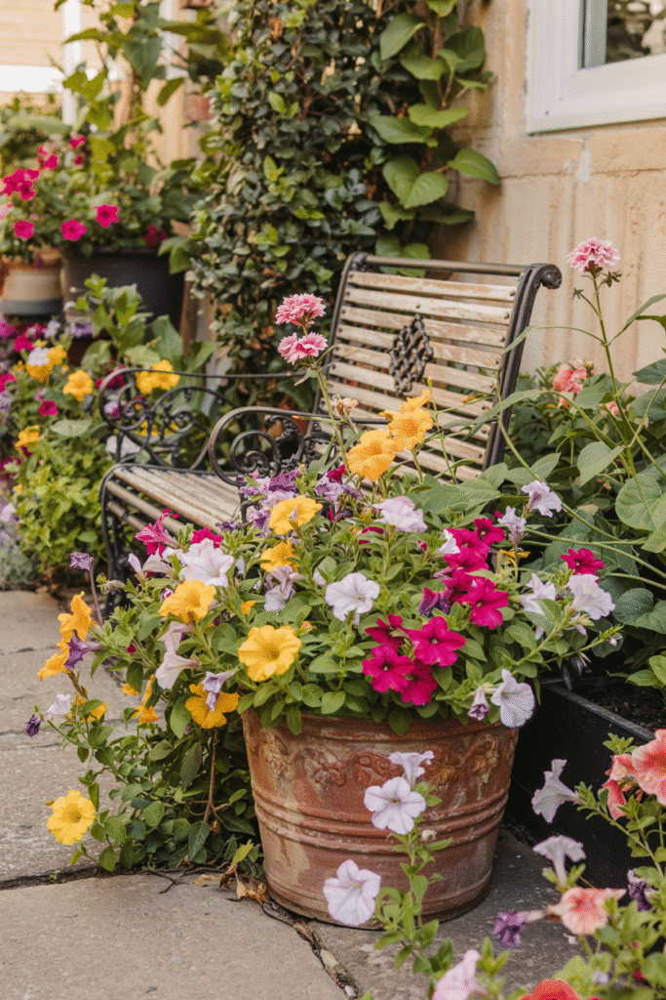
Keter Urban Bloomer 12.7 Gallon Raised Garden Bed and Herb Planter
Shop on AmazonGarden Tool Organizer for Garage and Yard
Shop on Amazon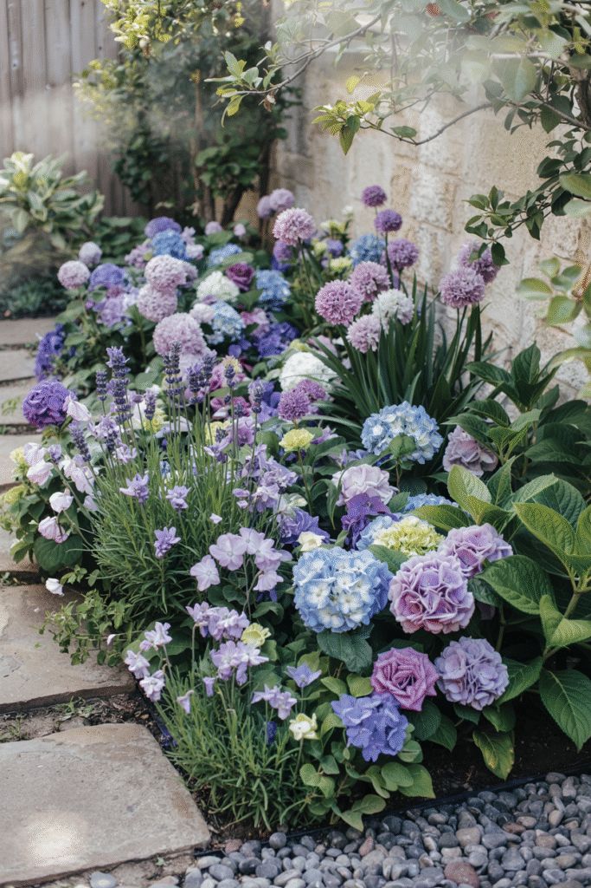

6. Turn It Into a Place to Sit
A single chair, a small bistro set, or a built-in bench instantly gives a corner an actual reason to exist.
This works especially well in a corner that gets decent shade, or a bit of privacy from a fence or hedge, since it already half-feels like a retreat before you've done anything to it.
Adding a small side table or a few cushions turns "a chair in the corner" into an actual spot someone genuinely wants to sit in.
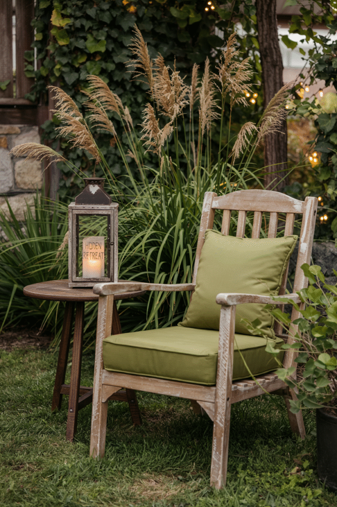
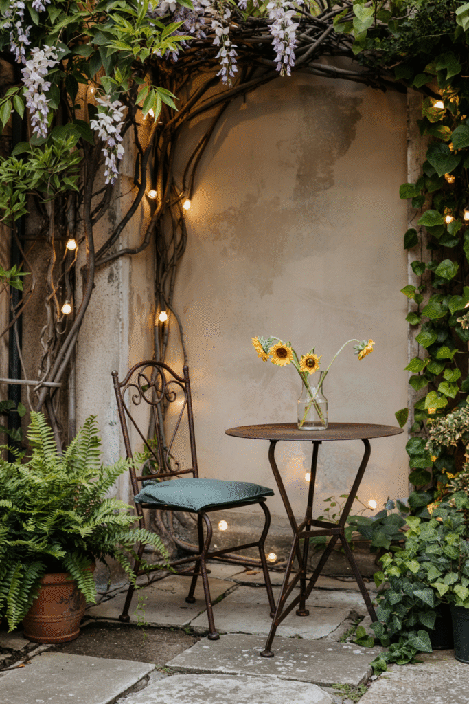
Solar Turtle Garden Statue with 7 Succulent LED Lights
Shop on AmazonMetal Flower Garden Stakes, 24 Inch, 3 Piece
Shop on Amazon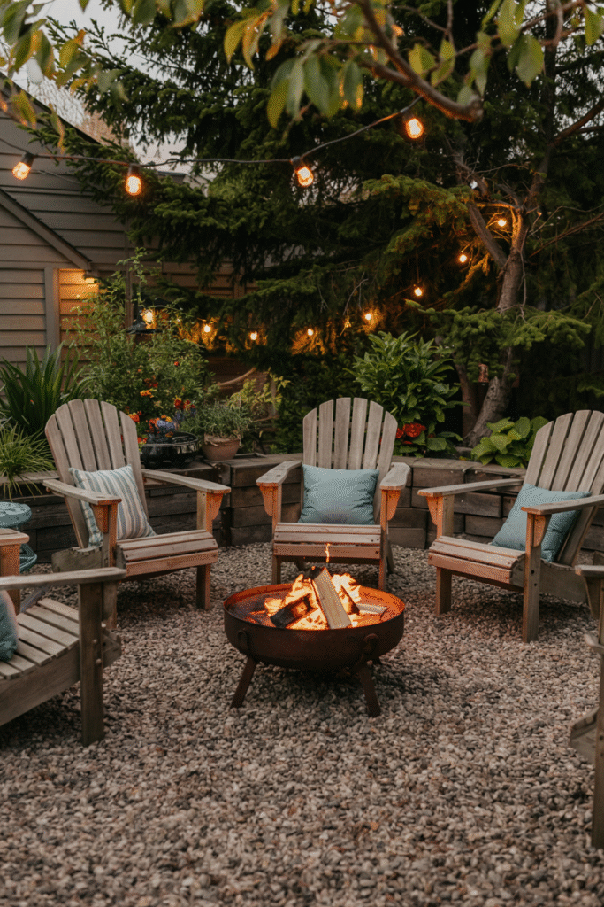
3-Piece Cast Aluminum Anti-Rust Bistro Patio Set
Shop on AmazonSunnydaze Crossweave 36 Inch Wood Burning Round Fire Pit
Shop on Amazon7. Start Small and Let It Grow
A corner doesn't need a full landscaping plan to go from empty to intentional.
A few potted plants, a small defined bed, or even just a change in ground cover can turn dead space into a deliberate feature almost immediately.
This also means a corner project can expand gradually. There's no need to finish all of it in one single weekend.
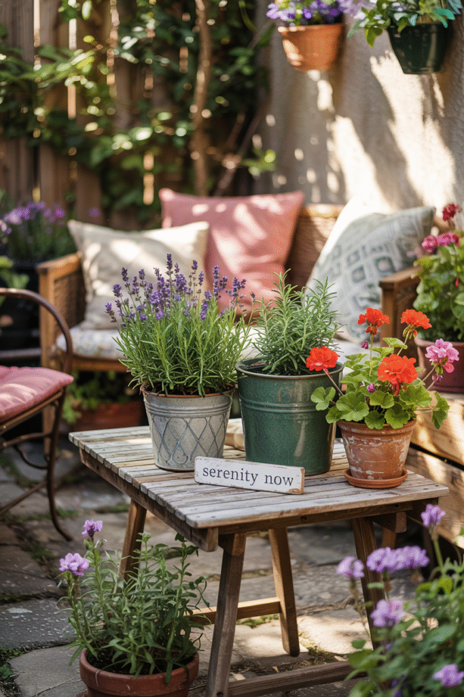
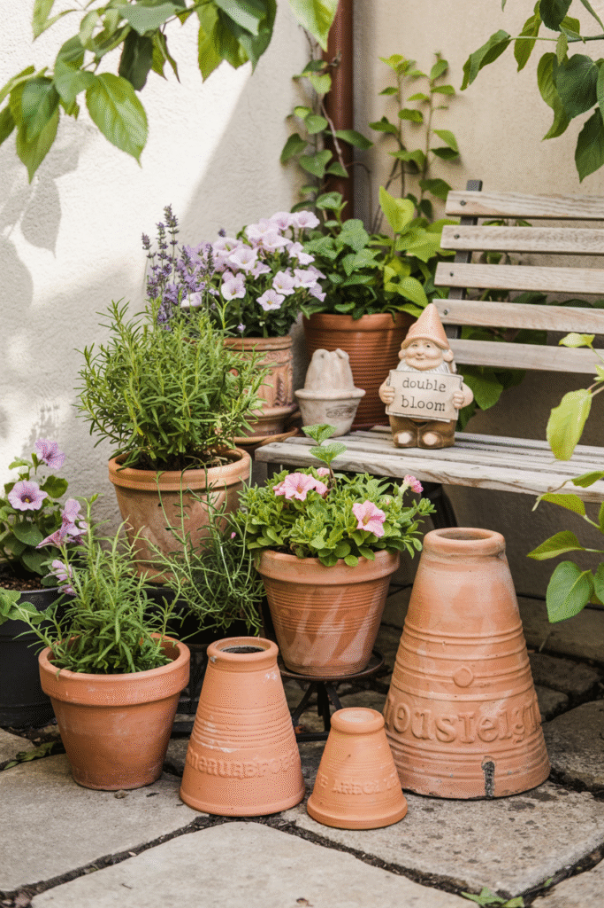
3-Piece Cast Aluminum Anti-Rust Bistro Patio Set
Shop on AmazonSunnydaze Crossweave 36 Inch Wood Burning Round Fire Pit
Shop on Amazon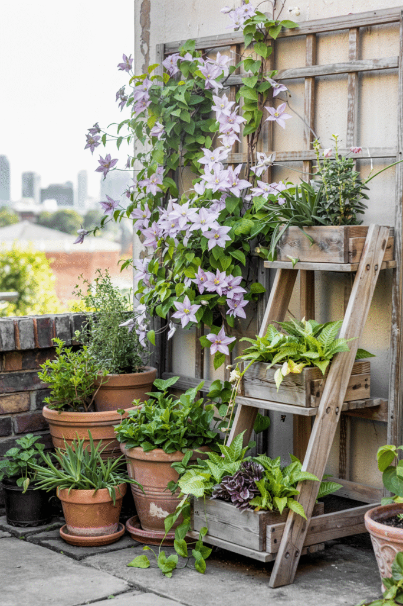
Usocik Large Tall Round Terracotta Outdoor Planters, Set of 4
Shop on AmazonBluepro Landscape Edging, 2 Inch, 100 ft
Shop on AmazonFinal Thoughts
An awkward corner isn't a problem that needs hiding. It's one of the easiest wins in the whole yard.
Start with one small change, give the space a reason to exist, and let the rest build from there over time.
Corners deserve better than being the spot where nothing else happened to fit.